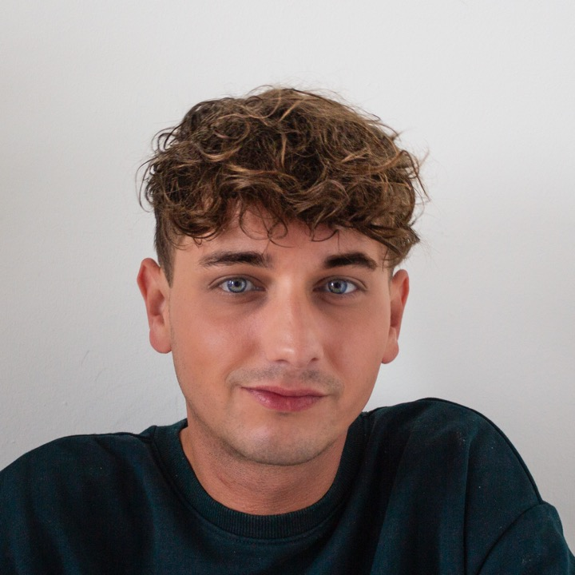

FREY.
Creative CV · Social media · DJ
A multidisciplinary creative raised on pop culture and the internet. I work across social media management, social-first content, graphic design, communication and DJ sets, with a professional background in operations, support and stakeholder coordination.Organized, creative and curious by nature, with a personal eye shaped by music, photography, architecture, walking, reading and cooking.